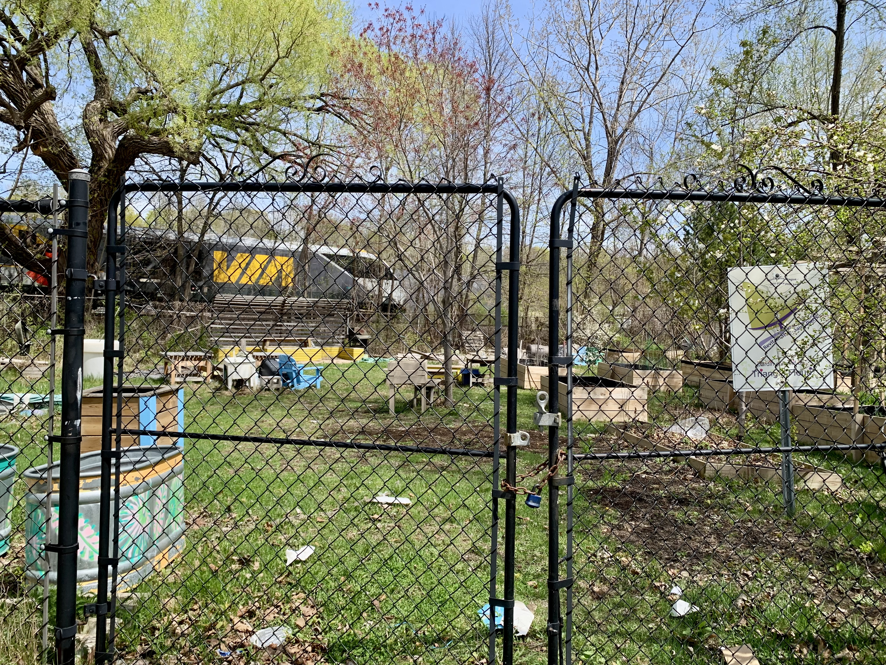

Research project
Between grassroots citizen initiatives and municipal governments:
Citizen contributions and gendered dimensions of the transition to a circular economy
What kind of circular economy do relationships between grassroots citizen initiatives and local governments help shape?

About
In the face of the climate emergency, the circular economy (CE) is increasingly presented as a pathway for transforming patterns of production and consumption. In Montréal, this transition is now embedded in a structured public policy: in 2025, the City published its first CE action plan and set a goal of increasing the share of consumed resources recirculated in Montréal’s economy from 3% to 6% by 2030. While public policies primarily recognize economic and institutional actors as drivers of this transition, a significant share of circular practices is carried out by citizens and community organizations. Zero-waste initiatives, collective repair, reuse and redistribution all contribute to the circular transition by transforming everyday practices and social norms. Yet the work behind these initiatives is often little visible and poorly recognized. It is also shaped by gender relations: within citizen initiatives, some tasks are more often performed by women, while technical repair activities are more strongly associated with men. Public policies still give limited recognition to these citizen contributions and their gendered dimensions, even though policy choices affect initiatives’ access to funding, visibility and opportunities for development. This project therefore seeks to understand how relationships between grassroots circular initiatives and local governments shape the recognition and support of the citizen work required for a circular economy, particularly through a gender lens. The research has three objectives: to characterize the visions of CE held by citizen and institutional actors in order to understand the roles they assign to themselves and recognize in one another; to analyze the discursive, material and financial dimensions of relationships between grassroots initiatives and public authorities; and to understand how gendered differences in citizen work are addressed within initiatives and public policies.
Methods
The dissertation uses a comparative analysis of three cities: Montréal, Amsterdam and Barcelona. In each city, the research combines analysis of the current municipal circular economy action plan, semi-structured interviews with public officials or elected representatives, participant observation in three grassroots initiatives in the community repair sector, and object-based interviews with participants. Comparing the three cities makes it possible to examine distinct urban trajectories and identify different ways in which grassroots initiatives are recognized, supported and integrated into CE policies. The methodology combines several data-collection methods in order to bring findings from community and institutional settings into dialogue. Within grassroots initiatives, object-based interviews ground data collection in materiality and practice, two dimensions that are central to the project.
Results
The project will help document informal grassroots initiatives, an area that remains understudied empirically, particularly in North America. It will deepen empirical analysis of gender relations in the circular economy. It also aims to foster dialogue among academic, community and institutional actors in support of a more inclusive and equitable circular transition.
Related outputs and publications
- Alagy, C. (2026). L’action collective dans urbaine dans la transition socio-écologique. Choosing the Transition Summer School. Université de Montréal, Canada
- Alagy, C., Van Neste, S., Bernard, S. (2026). A Care Ethics Approach to the Circular Transition: Addressing the Contradictions of the Circular Economy Through Practices of Care. Circular Economy - Interdisciplinary Conference (CEIC 2026). Toulouse, France
- Alagy, C. (2026). Table ronde «Habiter autrement: (co)construction de la relation à l’intime et au collectif» Colloque international du CELAT 2026. Québec, Canada
- Alagy, C. (2026). Repenser la circularité au prisme du soin : les apports de l’éthique du care à la transition circulaire. ACFAS 2026, Trois-Rivières, Canada
- Alagy, C., Bernard, S., Van Neste, S. (2025). Les initiatives citoyennes de transition socio-écologique : quelle place dans la transition vers l’économie circulaire ? ACFAS 2025, Montréal, Canada
- Alagy, C. (2025). Reshaping the relationship to neighbourhoods and the habitat : the role of grassroots transition initiatives in the city, Urban affairs association conference 2025, Vancouver, Canada. Presentation as part of a panel organized by CRACH